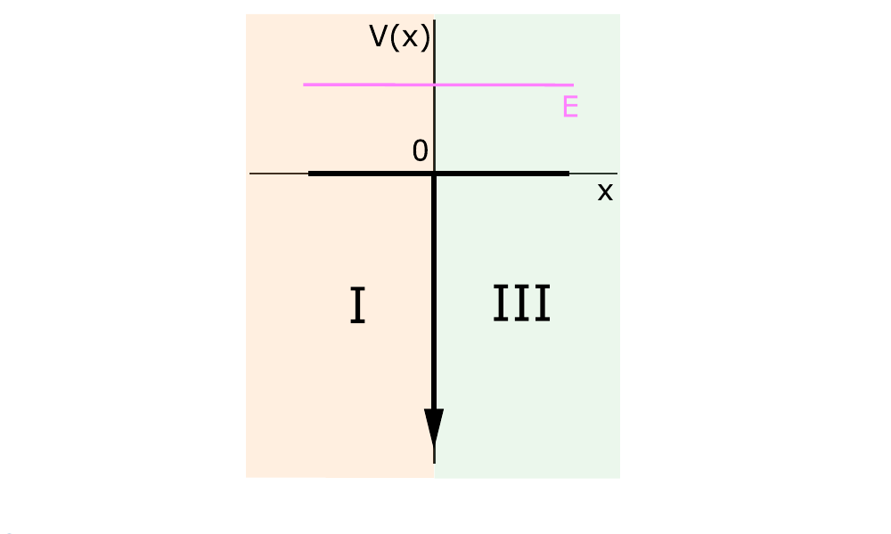
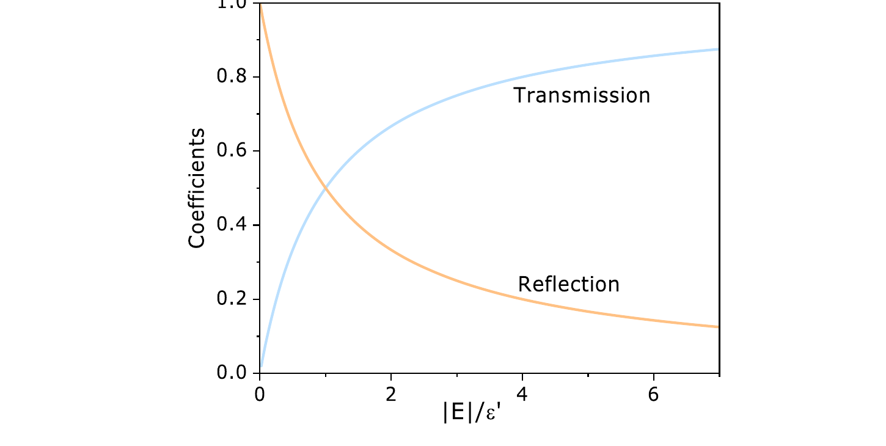

The zero-width limit of the positive-energy finite well
11 / 14
Guided reading
Take the zero-width limit, \(a\to0\), of the finite potential well with \(E>0\). Region II is suppressed and the potential becomes \(V(x)=-\alpha\delta(x)\). The goal is to determine the transmission and reflection coefficients for a particle incident from the left.
Delta potential well

Figure 4.9: delta potential well. In the zero-width limit only regions I and III remain.
Integrating from \(-\epsilon\) to \(+\epsilon\) and taking \(\epsilon\to0\) gives the derivative on the left of the interface minus the derivative on the right:
The coefficients obey \(R+T=1\). The larger the ratio \(|E|/\mathcal E'\), the greater the transmission probability.
Coefficients as functions of energy

Figure 4.10: the transmission \(T\) and reflection \(R\) coefficients as functions of \(|E|/\mathcal E'\). The two curves correspond to the displayed expressions for \(T\) and \(R\).
Delta barrier
For \(V(x)=\alpha\delta(x)\), a delta-type barrier, the transmission and reflection coefficients are the same as for the delta well when the incident particle has \(E>0\).
Exercise-ready boundary
This page supports guided exercises on the positive-energy delta-well scattering calculation.
Use from this page: regional wave functions, the interface conditions, \(\mathcal E'\), and the coefficients \(T\) and \(R\).
Keep in the book: the complete integral calculation across the delta interface.
Good exercise balance: apply continuity and the derivative relation before forming \(T\) and \(R\).
Practice anchors
Use these anchors to build compact exercises from the delta-well scattering calculation.
Focus: positive-energy scattering from \(V(x)=-\alpha\delta(x)\).
Conceptual check: identify the incident, reflected, and transmitted amplitudes.